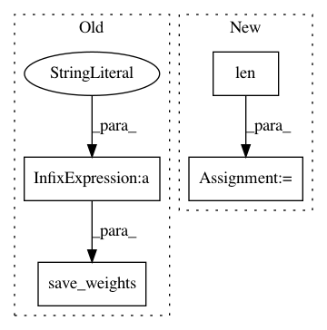

ac7bb33dd978e2bf6ecb0cf055dd6bf6c9c1ea05,train.py,,,#,21
Before Change
model.seen += imgs.size(0)
if epoch % opt.checkpoint_interval == 0:
model.save_weights("%s/%d.weights" % (opt.checkpoint_dir, epoch))
After Change
)
)
batches_done = len(dataloader) * epoch + batch_i
// Tensorboard logging
for loss_name, loss in model.losses.items():
logger.scalar_summary(loss_name, loss, batches_done)
In pattern: SUPERPATTERN
Frequency: 3
Non-data size: 4
Instances
Project Name: eriklindernoren/PyTorch-YOLOv3
Commit Name: ac7bb33dd978e2bf6ecb0cf055dd6bf6c9c1ea05
Time: 2019-04-19
Author: eriklindernoren@live.se
File Name: train.py
Class Name:
Method Name:
Project Name: NeuromorphicProcessorProject/snn_toolbox
Commit Name: afef503d34919fb2febc0b475085f140e1a4e977
Time: 2016-08-31
Author: bodo.rueckauer@gmail.com
File Name: ann_architectures/cifar10/alexnet.py
Class Name:
Method Name:
Project Name: NeuromorphicProcessorProject/snn_toolbox
Commit Name: afef503d34919fb2febc0b475085f140e1a4e977
Time: 2016-08-31
Author: bodo.rueckauer@gmail.com
File Name: ann_architectures/cifar10/cnn.py
Class Name:
Method Name: